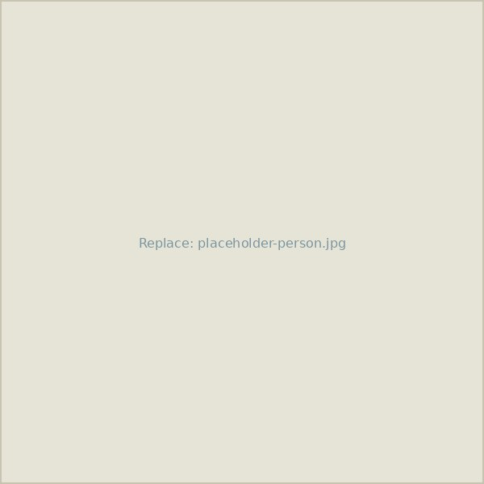

People
Lab Members
The people behind the research — currently and formerly in the lab.
Principal Investigator

Martha Zillig
Principal Investigator[Ph.D., institution]. Studies bird population dynamics and movement using quantitative and statistical ecology.
Current Members

Member Name
Postdoctoral ResearcherOne-line description of their focus within the lab.
Member Name
Ph.D. StudentOne-line description of their focus within the lab.
Member Name
Field TechnicianOne-line description of their focus within the lab.
Alumni
Former students and researchers, and where they went next:
- Name — now [Position] at [Institution]
- Name — now [Position] at [Institution]